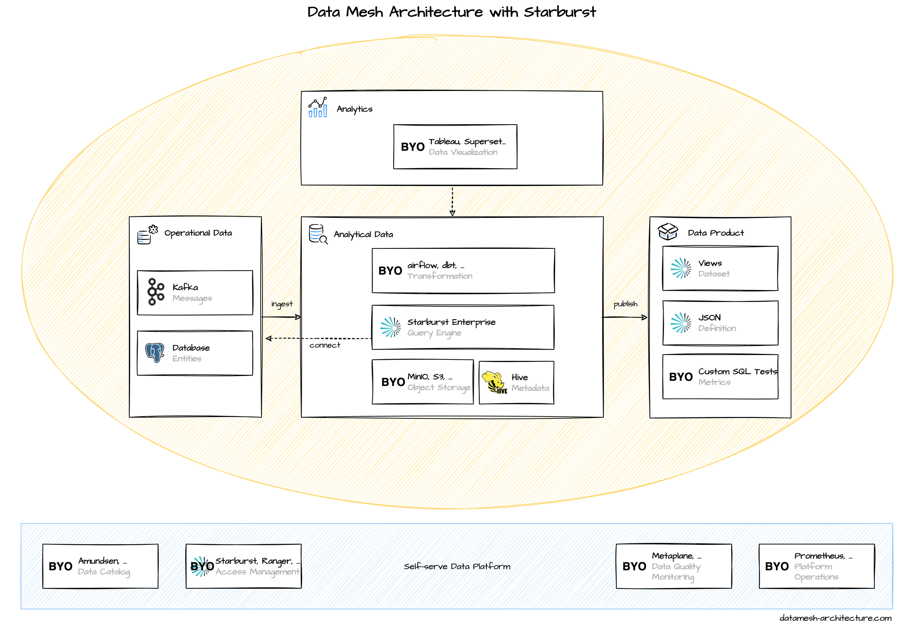

Starburst`s main product is Starburst Enterprise which you license and run by yourself, typically in a Kubernetes cluster. Their cloud service offering Starburst Galaxy is maturing, but not on par with their main product yet.
The central piece in Starburst Enterprise is its distributed query engine that's built on top of Trino , formerly known as PrestoSQL. It allows to query and join data stored in different formats on different data stores on different cloud providers or even on-premise, presuming there's a connector available. Most commonly, the ingested analytical data and results are stored as files in object stores, such as S3 or MinIO. The recommended file format is Parquet as it optimizes for fast queries and requires significantly less space. The query engine needs to know how to deserialize the Parquet or JSON file and the structure of the actual data, such as which column has which data type. This information needs to be stored in a Hive metastore, or in a Hive metastore compatible cloud offering such as AWS Glue Data Catalog. Large data sets should be partitioned, for example by date, into smaller files to speed up your queries.
In addition to all the connectors that are available with Trino out of the box, Starburst Enterprise adds even more . This means that, regardless of how you store your ingested analytical data, you will probably be able to process it further with Starburst Enterprise. Because of all of these connectors, Starburst makes it easy to query operational data directly instead of ingesting it first. You may get started quickly with this approach, but be aware of the downsides such as additional load on the operational data stores or making your queries resilient to breaking changes in the operational schemas. For integrated SaaS providers, such as Salesforce, these connectors might be a valid option, as the schema stays stable and the load is managed by the providers.
A data product in Starburst Enterprise is first and foremost a schema containing one or more (materialized) views that can be accessed through a standardized SQL interface. But it also includes metadata such as tags, a rating, and usage data of the views. The full definition of every data product is available as JSON, and it is recommended to version it in git or to be imported into sophisticated data catalogs.
Starburst Enterprise comes with a simple data catalog that is just a collection of published data products grouped by data domains. It can act as a starting point but is no replacement for more sophisticated data catalogs. We recommend to use Amundsen .